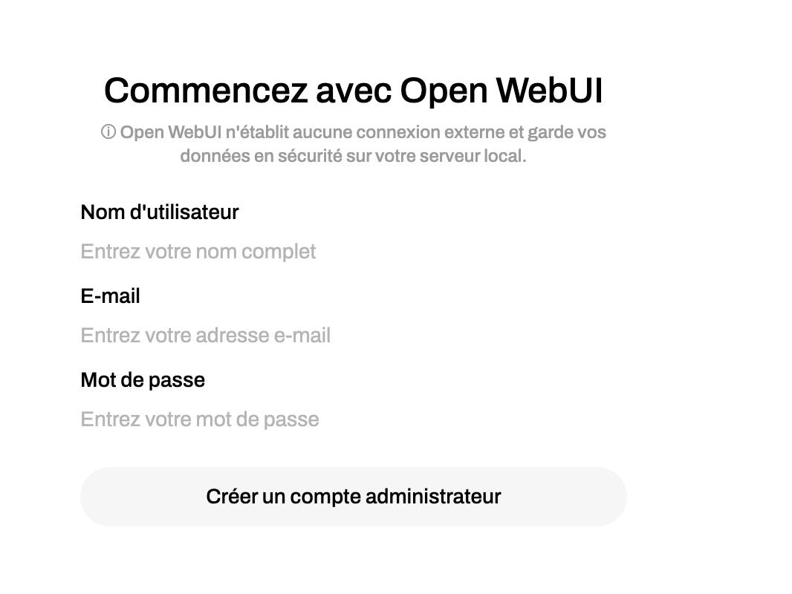

UNIVERSITE PARIS VIII - VINCENNES-SAINT-DENIS
DIRECTION DES SYSTEMES D'INFORMATION ET DU NUMERIQUE (DSIN)
Atelier IA
6. Installation/Configuration OpenWebUI,Qdrant, Ollama,n8n
sanghun BANG
Le 11 mars 2025
Sommaire
- Installation OpenWebUI,Qdrant, Ollama,n8n
- Ollama
- OpenWebUI : Création d'un modèl
- OpenWebUI : Créer une base de connaissances
- OpenWebUI : Modèle
- OpenWebUI : Tools & Functions
- Prochain atelier
- Références
Installation OpenWebUI,Qdrant, Ollama,n8n
% docker run -d --name open-webui -p 3000:8080 \
ghcr.io/open-webui/open-webui:main
% ou => docker compose up -d
Installation OpenWebUI,Qdrant, Ollama,n8n
Login

Ollama
Gestion de modèles
% ollama list
% ollama remove model_name
% ollama run model_name
Ollama vs Hugging face
- Ollama : Se concentre sur l'exécution des modèles en local sur le système de l'utilisateur. Les modèles sont téléchargés et exécutés directement sur la machine sans dépendance à des services cloud externes.
- Hugging Face : Propose une solution basée sur le cloud avec des API, permettant d'utiliser des modèles pré-entrainés ainsi que de les entraîner et les évaluer sur des ressources cloud (GPU). Il offre également des options d'hébergement de modèles dans le cloud.
OpenWebUI : Création d'un modèl
OpenWebUI : Créer une base de connaissances
OpenWebUI : Outils
- Étend les capacités de l'IA (LLM).
- L'IA utilise des outils pour obtenir des informations et répondre aux entrées de l'utilisateur.
- Exemple : prévisions météorologiques en temps réel, etc.
OpenWebUI : Fonctions
- Étend les fonctionnalités d'OpenWebUI.
- Les fonctions gèrent le processus d'OpenWebUI.
- Exemple : filtrer les propos inappropriés des entrées utilisateur, permettre l'accès à Vertex AI.
Prochain atelier
- 1. Introduction to Natural Language Processing in Python
- 2. Introduction to LLMs in Python
- 3. Working with Hugging Face
- 4. Intermediate Deep Learning with PyTorch (1)
- 5. Intermediate Deep Learning with PyTorch (2)
- 6. Installation/Configuration OpenWebUI,Qdrant, Ollama,n8n
- 7. Intégration de n8n dans OpenWebUI (1)
- 8. Intégration de n8n dans OpenWebUI (2)
- 9. Deep Learning for Text with PyTorch
- 10. Building Chatbots in Python
- 11. Working with Llama 3
- 12. Transformer Models with PyTorch
- 13. Developing LLM Applications with LangChain
- 14. Retrieval Augmented Generation (RAG) with LangChain
- 15. Distributed AI Model Training in Python
- 16. Beyond LLMs: Test Time Training, Differential transformer, Titans
Références